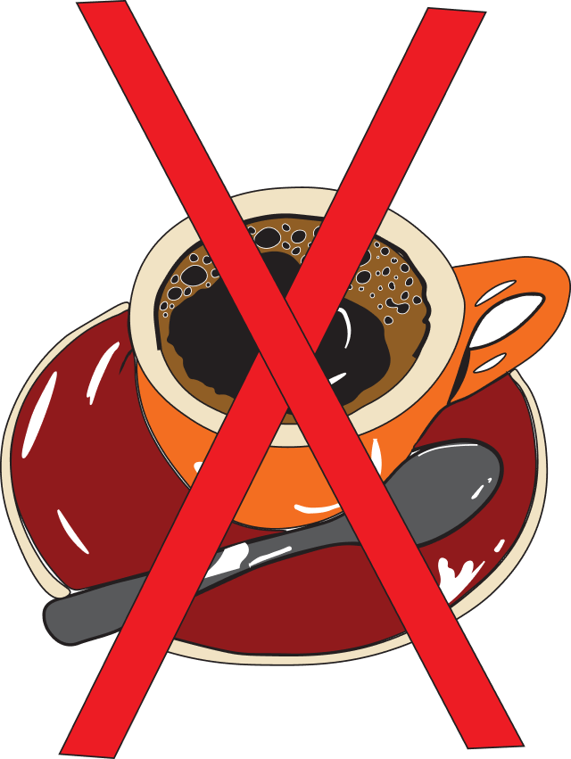
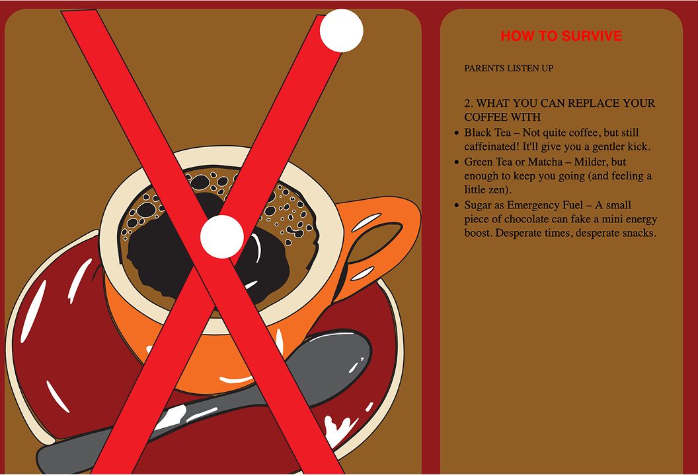

TEMA 4
Adobe Illustrator
I tema 4 blev vi introduceret til Adobe, herunder Illustrator - Adobe Illustrator er et vektor baseret grafisk designprogram, der bruges til at lave illustrationer, logoer, ikoner mm. I dette tema brugte jeg Adobe Illustrator til at tegne en illustration, som ser ud som følgende:
Til at tegne illustrationen, brugte jeg “pen tool” og “ curvature pen tool” for at skabe en mere præcis cirkel. Til farverne brugte jeg “fill” og “stroke” for at opnå farverne som jeg ville have dem.
JavaScript
I tema 4 blev vi introduceret til JavaScript og hvordan det kan bruges - JavaScript bruges til at lave interaktive hjemmesider, altså at man med JavaScript kan lave sider, der reagerer på brugerens input. F.eks. brugte jeg i dette projekt JavaScript til at lave de hvide cirklerne på kaffe-illustrationen interaktive. Det ser ud som følgende:
Når brugeren holder musen over den, skifter farven til rød – og tilbage til hvid, når musen fjernes. Hvis man klikker på den, bliver en besked vist i boksen til højre, og gamle beskeder bliver skjult. Det giver en mere visuel og brugervenlig oplevelse i brugergrænsefladen.